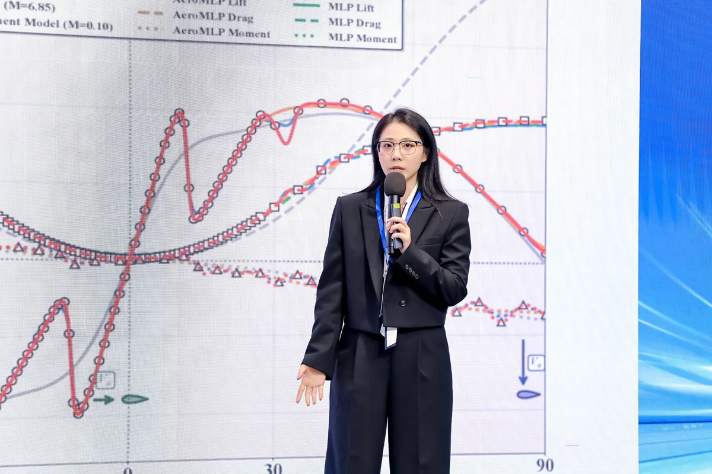

China · Granted 2025
ZL202510296558.7Angle-of-attack-dynamics-based daisy-chain control allocation for tiltrotor aircraft during transition
Inventors: Jingxian Liao, Yun Li, and Chenkai Cao
Patent record CN119806193BAeroEdge combines an analytical lift prior, B-splines and SiLU on every network edge. Wind-tunnel data from symmetric and cambered airfoils are used to evaluate transition lift predictions.
Engineering Applications of Artificial Intelligence, 186, 116648
DOI
Derives Lyapunov stability conditions for online allocation. Across three controllers, allocKAN reduced the mean final state norm by 37.6–46.6% relative to allocMLP.
Engineering Applications of Artificial Intelligence, 173, 114453
DOIModels nonlinear transition aerodynamics and integrates a harmonic disturbance observer with a super-twisting sliding mode controller in the longitudinal feedback loop.
Presents CADLLM for generating parametric CAD modeling sequences from text descriptions.
Engineering Applications of Artificial Intelligence, 186, 116648, 2026.
Engineering Applications of Artificial Intelligence, 173, 114453, 2026.
Drones, 7(4), 255, 2023.
Proceedings of the Institution of Mechanical Engineers, Part C: Journal of Mechanical Engineering Science, First published online in 2020.
Proceedings of the 63rd Annual Meeting of the Association for Computational Linguistics (Volume 1: Long Papers), 21720–21748, 2025.
13th Asian Control Conference (ASCC), 2022.
Proceedings of the 2021 Asia-Pacific International Symposium on Aerospace Technology (APISAT 2021), Vol. 2, Springer, 2022.
21st International Conference on Control, Automation and Systems (ICCAS), 2021.
China · Granted 2025
ZL202510296558.7Inventors: Jingxian Liao, Yun Li, and Chenkai Cao
Patent record CN119806193BChina · Patent application pending
202611036737.8Inventors: Jingxian Liao and Yun Li · Filed 13 July 2026
China · Patent application pending
202611445457.2Inventors: Jingxian Liao and Yun Li · Filed 17 September 2026